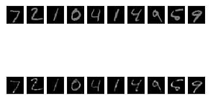
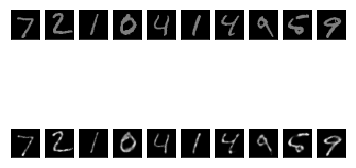
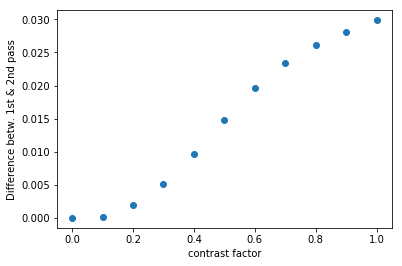

Reduced Contrast
Images with reduced contrast are presented to the trained (on regular contrast images) network from the previous experiment, to see if the second pass can reconstruct an
image that is more akin to a regular contrast image.
To reduce the contrast each pixel of the image is multiplied by some contrast factor. In the following, each pixel was multiplied by 0.5, i.e. each pixels
has values in the range [0.0, 0.5] instead of [0.0, 1.0].
First pass reconstruction:

Second pass reconstruction:

The second pass reconstruction has a mean pixel value of 0.0617, while the first pass reconstruction has a mean pixel value of 0.0468.
So while the second pass reconstruction is on average brighter and there is thus a higher contrast between "active" and "non-active" pixels,
it is not able to restore the image to its original contrast.
The following shows the absolute difference in mean pixel value between the two reconstructions as a function of different contrast factors (from 0.1 to 1)
